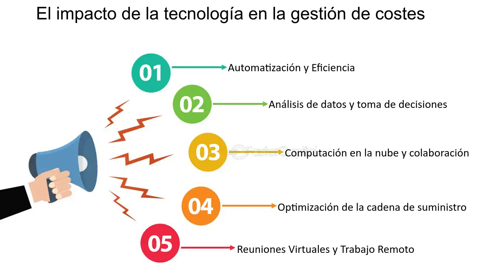

INTRODUCCION
El avance de las tecnologías web ha transformado la forma en que las personas trabajan y colaboran, especialmente en entornos remotos. La capacidad de conectarse y colaborar a través de internet ha abierto nuevas oportunidades para trabajadores y empresas, permitiendo una mayor flexibilidad, comunicación y colaboración. Sin embargo, también ha planteado nuevos desafíos que deben ser gestionados adecuadamente.
En este artículo, exploraremos los impactos más significativos de las tecnologías web en el trabajo remoto y la colaboración. Abordaremos cómo estas tecnologías han aumentado la flexibilidad, mejorado la comunicación, incrementado la colaboración, reducido costos, planteado desafíos de seguridad y cambiado la cultura organizacional. Al final, también presentaremos un video de ejemplo para ilustrar estos puntos.
Aprende mas sobre el trabajo remoto:
saber mas.
Aumento de la Flexibilidad
Las tecnologías web permiten a los trabajadores acceder a sus tareas y colaborar desde cualquier lugar con conexión a internet. Esto proporciona una mayor flexibilidad en términos de horarios y ubicaciones, lo que puede mejorar la conciliación entre el trabajo y la vida personal.
Mejora de la Comunicación
Las herramientas de comunicación en línea, como el correo electrónico, las videoconferencias y las plataformas de mensajería instantánea, facilitan la interacción entre los miembros del equipo, incluso cuando están dispersos geográficamente. Esto promueve una comunicación más fluida y eficiente.
Incremento de la Colaboración
Las tecnologías web ofrecen herramientas colaborativas, como documentos compartidos, pizarras virtuales y plataformas de gestión de proyectos, que permiten a los equipos trabajar juntos en tiempo real, compartir ideas y realizar un seguimiento del progreso de manera colaborativa.
Reducción de Costos
El trabajo remoto respaldado por tecnologías web puede reducir los costos asociados con la infraestructura física de oficina, como el alquiler de espacio y los gastos operativos. Además, puede disminuir los costos de viaje y desplazamiento para los empleados.

Desafíos de Seguridad
A pesar de los beneficios, el trabajo remoto también plantea desafíos de seguridad, como la protección de datos confidenciales y la prevención de ciberataques. Es fundamental implementar medidas de seguridad robustas para mitigar estos riesgos.
Cambio en la Cultura Organizacional
El trabajo remoto puede influir en la cultura organizacional, fomentando valores como la autonomía, la responsabilidad y la confianza. Las empresas deben adaptar sus políticas y prácticas para respaldar un entorno de trabajo remoto efectivo y saludable.